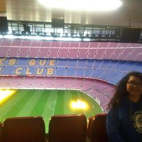
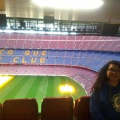
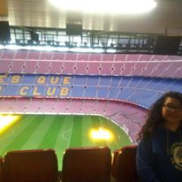

Karen es una gran amiga a la cual aprecio mucho esto da como resultado la admiración que tengo hacia ella por las decisiones que toma, por su responsabilidad, desempeño y la forma en que desarrolla sus metas. Para mí es un honor ser su amigo, la tomaría de ejemplo para ir por ese rumbo en mi vida, a la edad de 20 años estudiando universidad, visitando el extranjero y tomando en todo momento en cuenta a sus amigos.
Cuando la conocí fue en la preparatoria 5to semestre para ser exacto, después de una discusión de un problema de física.
Después de eso nos hicimos amigos y empezábamos a resolver los problemas junto a otros compañeros su habilidad para resolverlos era, es y será muy bueno ya que tiene un gran razonamiento.
Cuando algún profesor proponía debate para un tema ella era la primera en levantarse para hablar de ello, si no era la primera esperaba a que alguien hablara para analizar su argumento y opinar sinceramente a mí me daba miedo debatir con ella.
Pasaron los meses y ya éramos grandes amigos, se juntaba conmigo y con mis amigos a la hora del receso donde platicábamos de cualquier cosa o nos reíamos unos de los otros todo con moderación y cariño para no ofenderse tan gravemente, cuando llegaba el último semestre ella tomo la decisión de solicitar una beca llamada “Lideres del mañana” impartida por el Tec de Monterrey, esa universidad era la mejor para estudiar pero por lo que escuchaba de personas que no conocía, me sería incapaz de pagar.
Algunos lugares que ha visitado son:
Por solo mencionar algunos.
